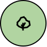
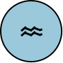

9:41
친구들의 들판
새 쪽지 2
유선규
민사온

정하람

민태호
친구 추가
아직 빈 땅
4
명
탐험 친구
12
장
쪽지
5
종
같이 만남
쪽지 날리기
함께 하는 탐험
민사온과 함께
꽃밭에서 나비 5마리 함께 찾기
2 / 5
정하람과 함께
비 온 뒤 달팽이 2마리 함께 찾기
0 / 2
유선규와 함께
학교에서 잠자리 3마리 함께 찾기
1 / 3
친구와 새 탐험 만들기
PICO가 알려줘요 !
쪽지는 직접 만난 친구와만 주고받아요.
보낸 쪽지는 친구 들판의 PICO 옆에 붙어요.
오늘 본 곤충으로 먼저 쪽지를 날려 보세요.
홈
도감
관찰
친구
마이


 유선규
유선규